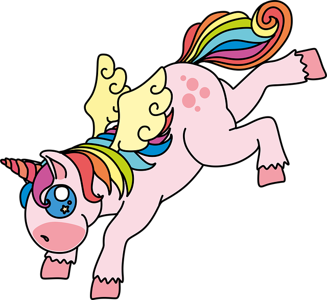

About
We are here to rid you of all your unicorn problems, have they taken over your backgarden? Have they tried to eat your pets or dug holes in your backgarden? Unicons are Ireland's deadliest pest, call us today to get our help
For more than 85 years, Unicorn Pest Control has been market leaders in pest control services in Ireland. We provide professional, effective and innovative unicorn control solutions to protect Irish home and businesses from unicorn problems. Our unicorn certified technicians have been rigorously trained to provide the best possible service, tailored to your particular property. Find a local unicorn control expert near you.
The Pest
For a long time there has been much proganda spread about unicorns and how good they are, have a look at wikipedia
Fake News
People even dressed their pets up as unicorns